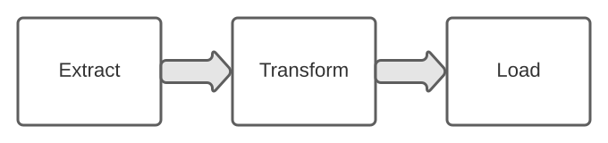
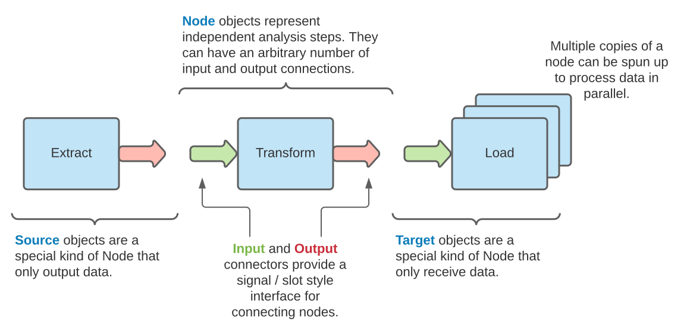

Installation
Egon is open-source and free to use (although attribution is both appreciated and encouraged where appropriate).
You can install the Python Egon Framework using pip:
pip install egon
Alternatively, the package source code can be downloaded from
GitHub.com using your favorite command line utility:
git clone egon
cd egon
python setup.py install --user
How it Works
Egon works by breaking down your analysis into discrete, reusable units.
Those units can then be assembled, tested, and deployed as a single a coherent pipeline.
Consider for a moment the classic example of an ETL pipeline:

The pipeline shown above consists of three discrete steps, each of which are connected in a particular order.
When building with Egon, this structure is represented as a collection of interconnected
Node objects:

Node objects can be connected in any order and are designed to run asynchronously.
This means you can scale your analysis by allocating additional processes to each node.
Nodes are also smart enough to automatically exit once they are no longer needed.
The first step in building a pipeline is to define the necessary nodes.
Ideally, each node should reflect a single independent task.
When processing a fixed amount of information, nodes should also be able to shutdown automatically once there is no more data for them to process.
Let's continue from the ETL example shown above.
The following sections demonstrate the construction of pipeline nodes as a dedicated class.
This is the most flexible way to build a node, but if you are looking for a shorter syntax check out the
Shorthand section.
Source Nodes
Source type nodes are special in that they have no incoming pipeline connections and can only produce data.
This makes them ideal for the extract task.
We build the extract node as a class that inherits from the Source class.
We add a single output connector and define the analysis logic of the node in the action method.
from egon.connectors import Output
from egon.nodes import Source
# Nodes are represented as classes that inherit from the egon.nodes module
class Extract(Source):
# Here we define an output connector for the class
# This allows the node to send data further down the pipeline
# For more complicated nodes, you can define as many connectors as needed.
data_out = Output()
def setup(self):
"""Setup tasks are optional and can be used to configure a pipeline node"""
self.database = connect_to_database()
def action(self):
"""Action tasks reflect the core analysis logic of a pipeline node"""
# Once the iterator is exhausted this function will exit and the pipeline node will start to shutdown
for data in self.database.get_fixed_number_of_items():
self.data_output.put(data)
def teardown(self):
"""Teardown tasks are optional and can be used for clean up tasks"""
self.database.disconnect()
Target Nodes
Target nodes are similar to Source nodes except they receive data instead of sending it.
This makes them ideal for the load task.
from egon.connectors import Input
from egon.nodes import Target
class Load(Target):
# Here we define an input connector for the class
# This allows the node to receive data from other nodes
data_input = Input()
# The rest of the class should include the same
# ``setup``, ``action``, and ``teardown`` structure from earlier.
...
It's important that pipeline nodes exit gracefully once there is no more data to process.
Input connectors include the iter_get method which allows you to iterate over incoming data.
iter_get is smart enough to automatically exit once there are no longer any upstream processes left to feed it data.
class Load(Target):
data_input = Input()
def action(self):
"""Load data into a directory"""
for data in self.data_input.iter_get():
... # Logic to insert data into a target database goes here
Generic Nodes
Generic Node objects can have both input and output connectors.
In principle we can define as many input or output connections as necessary.
However for the ETL example we only need one of each.
from egon.connectors import Input, Output
from egon.nodes import Node
class Transform(Node):
# ``Node`` subclasses can have an arbitrary number of input AND output connectors.
# Here we define an input AND output connectors for the class
# This allows the node to communicate with upstream and downstream nodes
data_in = Input()
data_out = Output()
# The rest of the class should include the same
# ``setup``, ``action``, and ``teardown`` structure from earlier.
...
Pipeline Assembly
The last step in constructing a pipeline is to connect together the individual nodes.
Connectors provide a signal/slot style interface where input/output connectors can be connected together as follows:
from egon.pipeline import Pipeline
class ETL(Pipeline):
def __init__(self):
# Define the nodes of the pipeline
self.extract = Extract()
self.transform = Transform(num_processes=4) # Allocate multiple processes
self.load = Load()
# Connect each of the nodes together
self.extract.data_out.connect(self.transform.data_in)
self.transform.data_out.connect(self.load.data_in)
The validate task handles process allocation and runs automated validation tasks (see the documentation below).
The entire pipeline can then be launched in one line:
etl_pipeline = ETL()
etl_pipeline.validate()
etl_pipeline.run()